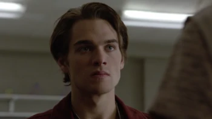

| Resumo | Informações |
|---|---|
| Liam Dunbar é um ex-personagem coadjuvante e um personagem principal atual na quarta , quinta e sexta temporadas de Teen Wolf da MTV . Embora Liam tenha frequentado originalmente a Devenford Preparatory Academy , ele foi expulso no final de seu primeiro semestre do primeiro ano, o que exigiu que ele se transferisse para a Beacon Hills High School , onde se juntou ao time de lacrosse. Foi através do lacrosse que Liam conheceu Scott McCall e Stiles Stilinski, já que Stiles suspeitava que Liam fosse sobrenatural devido às suas habilidades fenomenais de lacrosse, uma suspeita que estava incorreta. No entanto, eles realmente não começaram a interagir regularmente até Muted , quando o Scott salvou sua vida depois que um Wendigo chamado Sean Walcott o jogou do telhado do hospital ; infelizmente, para fazer isso, Scott teve que dar a Liam a Mordida , o que levou Liam a sobreviver com sucesso ao processo e se tornar o primeiro Lobisomem Beta feito por Scott . A transformação inicialmente aterrorizou Liam devido ao medo de que seus pais descobrissem e olhassem para ele como se ele fosse um monstro, mas Scott finalmente o convenceu de que ser um "monstro" sobrenatural não significava que ele fosse obrigado a fazer atos monstruosos, e que eles poderia escolher ser bom como qualquer ser humano. Liam mais tarde provou ser um Lobisomem excepcionalmente forte , apesar de ser um Beta recém-mordido, mas a raiva que o tornou muito mais forte do que Lobisomens de sua idade também tornou muito mais difícil para ele controlar suas transformações . Mesmo assim, após mais de meio ano de prática e treinamento, Liam se tornou um lobisomem muito proficiente, embora ainda tenha dificuldade em se controlar nas luas cheias , especialmente durante as superluas. Após a 4ª temporada e ao longo da 5ª temporada , Liam se aproximou de todos os membros de seu novo bando , especialmente Scott e Stiles , mas inicialmente estava com medo de confessar sua nova identidade sobrenatural ao seu melhor amigo humano Mason Hewitt . No entanto, Liam acabou conquistando esse medo depois que ele foi forçado a mudar na frente dele, e ficou aliviado quando Mason aceitou sua confissão com emoção e alegria, em vez do medo e repulsa que esperava. Os dois então ajudaram o McCall Pack a lidar com os Dread Doctors e suas recém-criadas Quimeras . Sem o conhecimento de ninguém, Theo Raeken, uma Quimera disfarçada de um verdadeiro Lobisomem que alegou ter retornado a Beacon Hills após uma longa ausência para se juntar ao bando de Scott, estava na verdade manipulando todos os membros para se voltarem contra Scott, incluindo Liam. Quando a então fracassada namorada Quimera de Liam, Hayden Romero , estava perto da morte devido a uma overdose de mercúrio e Scott se recusou a dar a mordida por medo de matá-la, Theo usou a raiva que Liam já sentia e os efeitos da superlua iminente para convencê-lo. matar Scott para que ele pudesse se tornar um Alpha e dar a Hayden a mordida; Liam estava muito sobrecarregado com raiva e tristeza para perceber que Theo precisava de Liam, como o único Beta mordido do True Alpha Scott, para matar Scott e roubar seus poderes para que Theo pudesse matar Liam e tomar os poderes para si. Embora a tentativa de Liam de matar Scott tenha falhado, os dois se afastaram por algum tempo antes de finalmente se reconciliarem depois que ambos perceberam a extensão em que Theo havia manipulado todos. Desde este ponto, os relacionamentos de Liam com Scott e o bando em geral são mais fortes do que nunca, e eles foram capazes de derrotar os Dread Doctors, Sebastien Valet / a Besta de Gevaudan e o próprio Theo como uma equipe. Na 6ª temporada , Liam tornou-se ainda mais envolvido no mundo sobrenatural, já que seu Alpha e seu amigo próximo Scott logo iriam para a faculdade, forçando Liam a se preparar para assumir a liderança do bando na ausência de Scott. Apesar de sua insegurança, ele aprendeu muito sobre o que é preciso para ser um Alpha e derrotou com sucesso um Hellhound em um combate individual, enquanto sofria os efeitos dos poderes de indução de medo do Anuk - ite . Desde então, ele se tornou um membro essencial da matilha enquanto se prepara para sua própria formatura do ensino médio. Liam é o melhor amigo de Mason Hewitt , Scott McCall e Stiles Stilinski . Liam também é membro do McCall Pack . |

Nascimento: 1996/1997 Status: Vivo |
Quando Liam foi apresentado pela primeira vez, ele parecia ser um adolescente extrovertido e confiante, mas foi rapidamente revelado que seu personagem era muito mais complicado e cheio de nuances do que parecia à primeira vista. Após o choque inicial de sua transformação em lobisomem , Liam demonstrou que ele também é um amigo muito solidário e leal para aqueles com quem ele realmente se importa, como seu melhor amigo Mason , sua namorada Hayden , seu alfa e bom amigo Scott , e o resto de seu pacote . Ele também mostrou que é incrivelmente corajoso e bastante inteligente, apesar de ser considerado mais musculoso do que inteligente.
No entanto, apesar de todas essas boas qualidades, ele tem mais alguns traços negativos, principalmente sua dificuldade em controlar sua raiva. Liam foi diagnosticado com transtorno explosivo intermitente quando calouro, o que faz com que ele seja incrivelmente impulsivo (o que pode levar à irracionalidade e mau julgamento), além de possuir um temperamento explosivo que faz com que ele fique ansioso por uma briga quando irritado. Embora sua transformação em um lobisomem tenha amplificado isso até certo ponto, já que a licantropia pode causar problemas de raiva naqueles que foram transformados pela mordida ou um arranhão, a inclusão de Liam no McCall Pack e a boa influência de seus amigos próximos o ajudaram a melhorar. em controlar seu temperamento e manter o controle de seus lados humano e lobisomem.
Apesar dessa melhora geral na raiva e personalidade de Liam em geral, ele ainda é propenso a ataques de irracionalidade e violência em certas circunstâncias, como a superlua mais recente, quando o efeito do nascer da lua combinado com sua raiva em relação a Scott e medo da morte iminente de Hayden. A morte tornou mais fácil para Theo manipulá-lo para matar Scott a ponto de ele realmente acreditar que queria fazê-lo na época. Depois, no entanto, Liam ficou tão horrorizado com seu comportamento que se dedicou a compensar isso e demonstrou um senso de controle muito melhor sobre suas emoções desde então, devido em parte ao seu relacionamento reconciliado com Scott e seu relacionamento romântico. com Hayden.
Na 6ª temporada , Liam está quase no último ano do ensino médio e, diante de uma grande parte de seus amigos logo saindo para a faculdade (incluindo seu amigo próximo e Alpha Scott McCall ), Liam amadureceu bastante e assumiu mais responsabilidades. com o McCall Packe a equipe de lacrosse, tornando-se capitã da equipe deste último e sendo preparado para liderar os membros mais jovens do bando na ausência de Scott. Ele logo provou ser capaz de elaborar planos rapidamente, defendendo seus entes queridos e a cidade em geral, mesmo diante do medo e da adversidade, e se recusando a desistir, mesmo quando as perspectivas são sombrias. De muitas maneiras, ele se modelou de acordo com seu Alpha e, no processo, ele perdeu muitos de seus traços mais imaturos, embora seus problemas residuais de raiva sempre permaneçam uma luta para ele, como demonstrado durante o tempo do Anuk-ite em Beacon . Hills , quando toda a cidade foi afetada por seu poder de induzir o medo .
Liam é um jovem de baixa estatura com uma constituição atlética. Devido à sua intensa agenda de exercícios, tanto por amor ao lacrosse quanto por uma ânsia de ajudar a controlar sua raiva, Liam é bastante musculoso para sua idade, e tem cabelos loiros como mel, pele branca bronzeada e olhos azuis. Ele prefere roupas confortáveis, como moletons, camisas de beisebol, jeans e tênis, embora tenha mostrado usar roupas mais modernas, como jaquetas de couro e botas, quando vai a Sinema com Mason. À medida que as estações progridem, o cabelo de Liam fica mais escuro e cresce mais, e no final da 6ª temporada , era quase longo o suficiente para colocar atrás das orelhas.
Poderes:
Liam possui os poderes padrão de um Lobisomem Beta , embora seja considerado excepcionalmente poderoso para sua idade e classificação como resultado de sua raiva, o que aumenta consideravelmente sua força . Além disso, como ele é o primeiro Beta mordido de Scott , Liam é uma das duas únicas pessoas que podem roubar ou herdar a centelha Alpha de Scott, sendo o outro Hayden Romero .
Habilidades:
-Atletismo : Por exemplo, mesmo antes de sua transformação em lobisomem , Liam era excepcionalmente atlético, a ponto de Scott e Stiles suspeitarem que ele fosse um metamorfo, apesar de ser apenas um humano na época. O treinador Finstock se referiu a Liam como o prodígio de lacrosse mais talentoso que ele já treinou em sua carreira, e suas habilidades de lacrosse só melhoraram com a adição de seus poderes de lobisomem.
-Memória Fotográfica : Liam também demonstrou ter uma excelente memória, com a capacidade de recordar conversas e até pequenos detalhes quando é importante. Por exemplo, ele foi capaz de se lembrar da conversa que teve com Scott McCall durante sua primeira lua cheia sobre sua raiva e lembrou como ele explicou a Scott o que seu padrasto lhe disse sobre como crianças raivosas agiam para se ajudar na tentativa de escapar. do poço onde Garrett o prendeu. Ele também se lembrou do colar de pingente de folha que encontrou no buraco em que caiu na Beacon Hills Preserve e conseguiu identificá-lo como pertencente a Tracy Stewart .depois de ver uma foto dela usando, uma observação importante que ajudou o McCall Pack a aprender que ser enterrado vivo na floresta fazia parte do processo de transformação da Quimera .
Intelecto : Embora Liam seja mais comumente agrupado no lado "músculo" da matilha (como Scott McCall , Derek Hale , Malia Tate , Kira Yukimura , etc) em vez do lado "cérebro" (como Lydia Martin , Stiles Stilinski , e Mason Hewitt ), Liam demonstrou um intelecto acima da média que o ajudou a ganhar lentamente um papel de liderança no bando. Ele também mencionou que tem um amor pela história (muito parecido com seu aliado Derek Hale ), o que o ajudou bastante durante seu tempo no mundo sobrenatural; por exemplo, como ele usou seu conhecimento de Mykonos, Grécia para ajudá-lo com sua estratégia de batalha contraMonroe's Army e parecia ter prestado muita atenção durante a luta do bando contra o Werejaguar Kate Argent devido ao seu conhecimento do deus onça asteca Tezcatlipoca.
-Combatente Especialista : Embora ele não pareça ter treinamento formal, Liam mostrou que ele é um grande lutador combinando seus poderes de lobisomem com seus instintos, principalmente quando irritado ou com medo. Seu estilo de combate é mais parecido com o estilo de luta também utilizado por seu companheiro de matilha Stiles Stilinski . Durante a superlua, enquanto fortalecido por seu poder e sua própria raiva, Liam foi capaz de dominar e quase matar Scott (embora Scott estivesse fraco de wolfsbane e estivesse tentando não machucar Liam, o que o impediu de se defender adequadamente).
-Liam possui todas as fraquezas padrão associadas aos Lobisomens, incluindo acônito , cinzas da montanha , eletricidade , frequências ultrassônicas e subsônicas, luas cheias/superluas, eclipses lunares e emoções intensificadas.